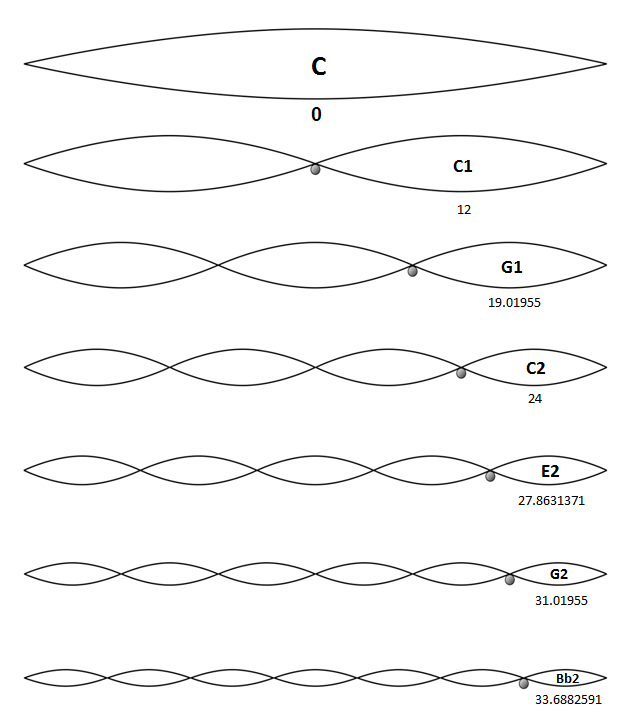
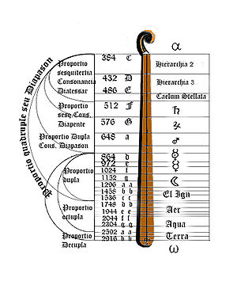
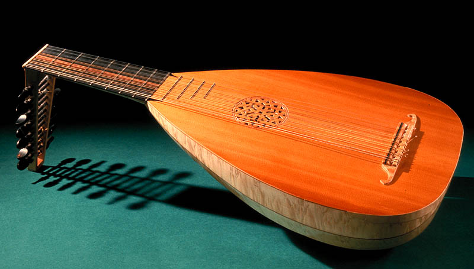
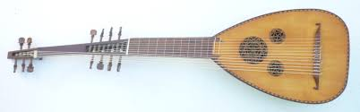
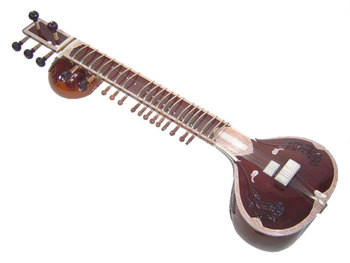

Instrumentación
Clase 004

"Cello Concerto, 1st Movement"
Edward Elgar
Pitágoras (569 a.C. - 475 a.C.)
Monocordio
Laúd
"Lachrimae"
John Dowland
Archilaúd
"Preludio" from "Sonate d'intavolatura di leuto"
Giovanni Zamboni
Sitar
"Concierto de Aranjuez" (1939)
Joaquín Rodrigo
“Asturias”
Isaac Albéniz
“El Abejorro”
Emilio Pujol
Intérprete: Luis Alejandro García
“Mediterranian Sun Dance”
Paco De Lucia - Al Di Meola
“All in Twilight for Guitar”
Toru Takemitsu
“Dazed and Confused” (1973)
Led Zeppelin
"Bernie VS Hillary- Battle of the Bands"
Schmoyoho
004